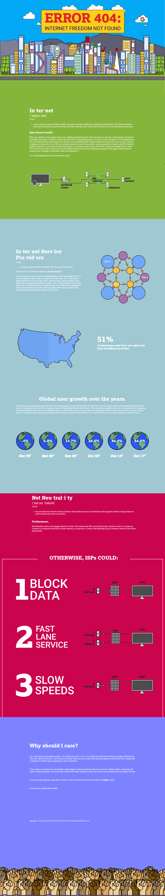
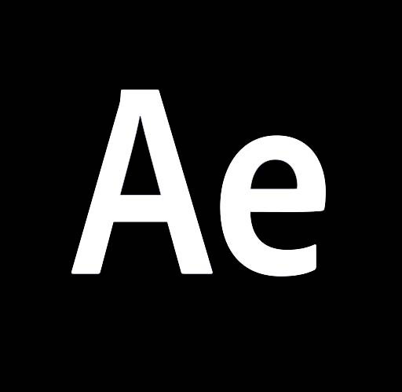

ERROR 404:
INTERNET FREEDOM NOT FOUND
In this infographic website, I discuss about the Internet and Net Neutrality.


I desgined this project in my Advance Interaction course at the University of Iowa. I had the opportunity to desgin a responseive infographic website using Adobe Muse. We were to construct a supporting argument against a social issue of our choice.